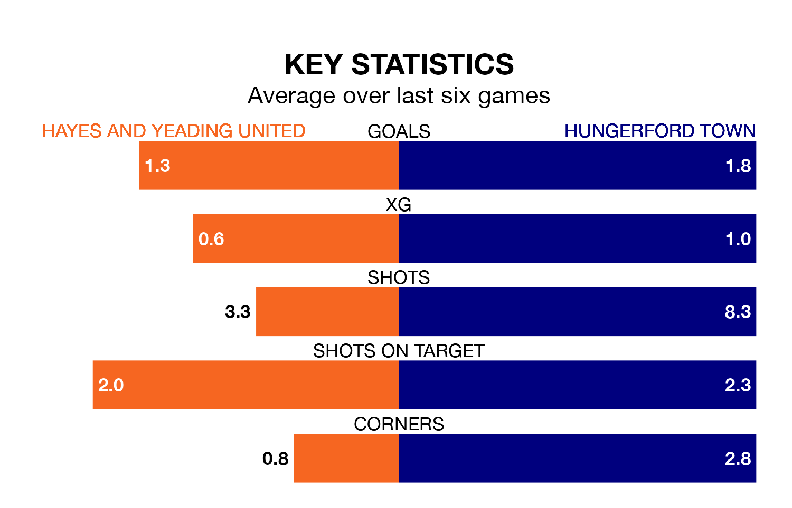

Hayes and Yeading United host Hungerford Town on Saturday at the SKYex Community Stadium in Southern League Premier South.
In their last league match, on Tuesday, Hayes & Yeading beat Bracknell Town 3-2 at home.
Hungerford also won, 3-2 at home against Swindon Supermarine on January 27.
With 56 goals in 28 games so far this season, Hungerford are the league's joint-second-highest scorers with 2.0 goals per game. But they are conceding more than average too, letting in 52 goals at a rate of 1.9 per game.
Hayes & Yeading, meanwhile, are below average scorers, with 1.5 goals per game, compared to a league average of 1.7. They have conceded 1.7 goals per game.
United are 17th in the table after 26 games, of which they have won six and drawn nine, earning 27 points.
Town are 11 places ahead of the home team in sixth, with 12 wins and nine draws putting them on 45 points.
Hayes & Yeading are in disappointing form in Southern League Premier South, with one win and three draws from their last six games.
With three wins and a draw over that period, the visitors' form is better – they have taken 10 points from 18, compared to Hayes & Yeading's six.
Updated: 14:12 (UTC), 02/02/24